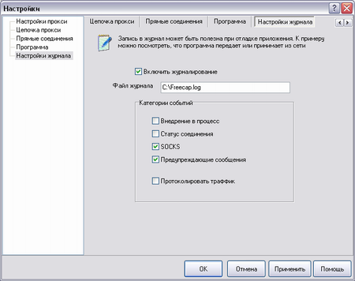

|
Журналирование может быть полезным при отладке, разрешении возникших проблем или просто для протоколирования всего траффика посланного/принятого программой.
Помните, что журнал может понадобится автору FreeCap для устранения ошибок программы или логики.

|
| Внедрение в процесс | всё связанное с внедрением в процесс (Подмена функций/отслежиание загрузки/выгрузки библиотек и пр.) |
| Статус соединения | всё связанное с сетевой активностью программы |
| SOCKS | всё связанной с SOCKSv4, SOCKSv5, HTTP прокси |
| Предупреждающие сообщения | тут всё понятно |
| Протоколировать траффик |
записывать траффик в файлы. Имя файла такое же как и имя файла журнала с суффиксом:
Для отправленных пакетов: ".<хэндл сокета>.asend.<порядковый номер>"
Для принятых пакетов: ".<хэндл сокета>.brecv.<порядковый номер>" |
|
|